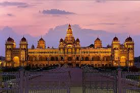

About Mysore Palace
The Mysore Palace, also known as the Amba Vilas Palace, is one of the most
famous and grand royal palaces in India, located in Mysuru, Karnataka. Built in the
Indo-Saracenic style with a blend of Hindu, Muslim, Rajput, and Gothic architecture, it is the
official residence of the Wadiyar dynasty.
Why Visit?
- Marvel at the ornate architecture and beautiful stained glass, domes, and arches.
- Witness the Dussehra Festival when the palace is illuminated with nearly 100,000 lights.
- Explore the royal throne, durbar hall, and intricate paintings.
- Evening light and sound show narrating Mysore’s royal history.
Location & Travel
Nearest Railway Station: Mysore Junction (~2 km)
Nearest Airport: Mysore Airport (~12 km)
Well connected by road and rail from Bangalore (approx. 3.5 hrs by car/bus).
Visiting Details
- Best Time to Visit: October to March (pleasant weather, Dussehra festival in October).
- Timings: 10:00 AM – 5:30 PM (Open every day).
- Entry Fee:
- ₹40 (Indian citizens)
- ₹200 (foreign tourists)
- Children below 10 years – Free
Average Travel Expense
A 1–2 day trip to Mysore including food, stay, and local sightseeing can cost around:
- Budget: ₹2,500 – ₹4,000 per day
- Mid-range: ₹4,500 – ₹6,500 per day
← Back to Home